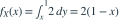

联合密度  ，区域为
，区域为  。对
。对  ，
， 的边缘密度为哪项？
的边缘密度为哪项？
，区域为 。对 ， 的边缘密度为哪项？- A
- B
- C

- D

我已思考，展开答案与解析
正确答案：B
- 固定
 ，
， 的范围为 ，故
的范围为 ，故 
。
易错提醒积分限取决于支撑区域，不能固定写成 0 到 1。
数学三·概率统计基础专题 · 数学三概率统计基础专题·原创第14题
按数学三常见概率统计知识点原创；不是历年真题或教材原题。
，区域为 。对 ， 的边缘密度为哪项？， 的范围为 ，故 
。数学三·概率统计基础专题 · 数学三概率统计基础专题·原创第14题
按数学三常见概率统计知识点原创；不是历年真题或教材原题。